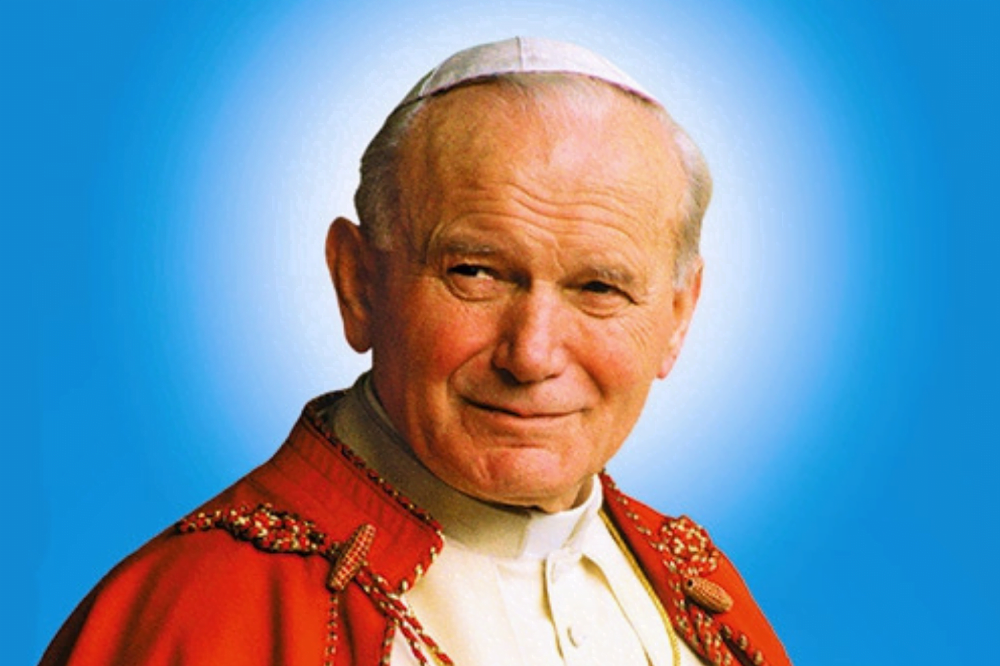
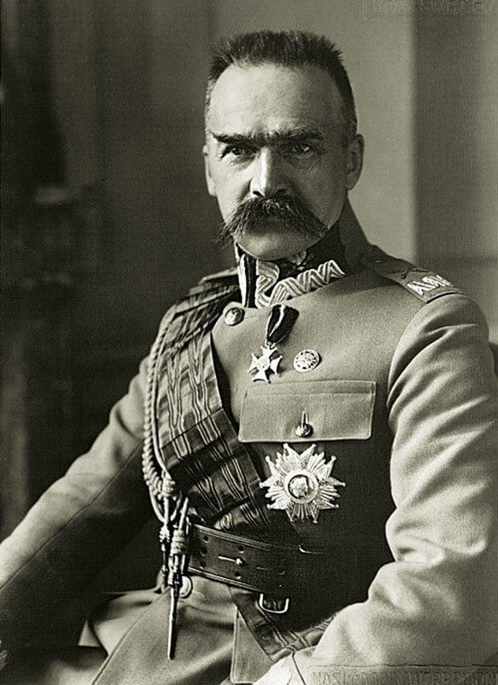
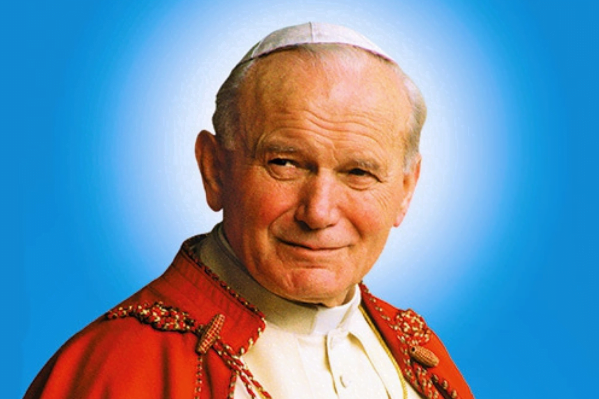
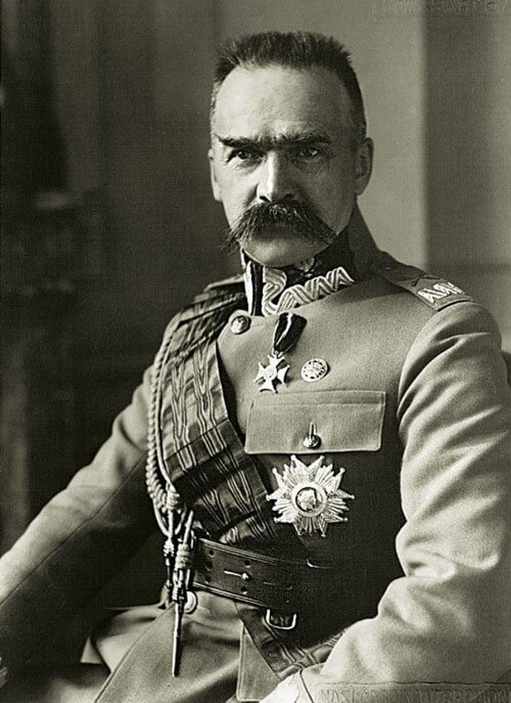

Święto państwowe w Polsce obchodzone corocznie 11 listopada dla upamiętnienia odzyskania niepodległości przez Polskę w 1918, po 123 latach zaborów (1795–1918). Święto zostało ustanowione ustawą z dnia 23 kwietnia 1937, zniesione ustawą Krajowej Rady Narodowej 22 lipca 1945, przywrócono je ustawą w okresie transformacji systemowej w 1989. Jest dniem wolnym od pracy.
Poniżej, najwięksi Polscy patrioci
 


